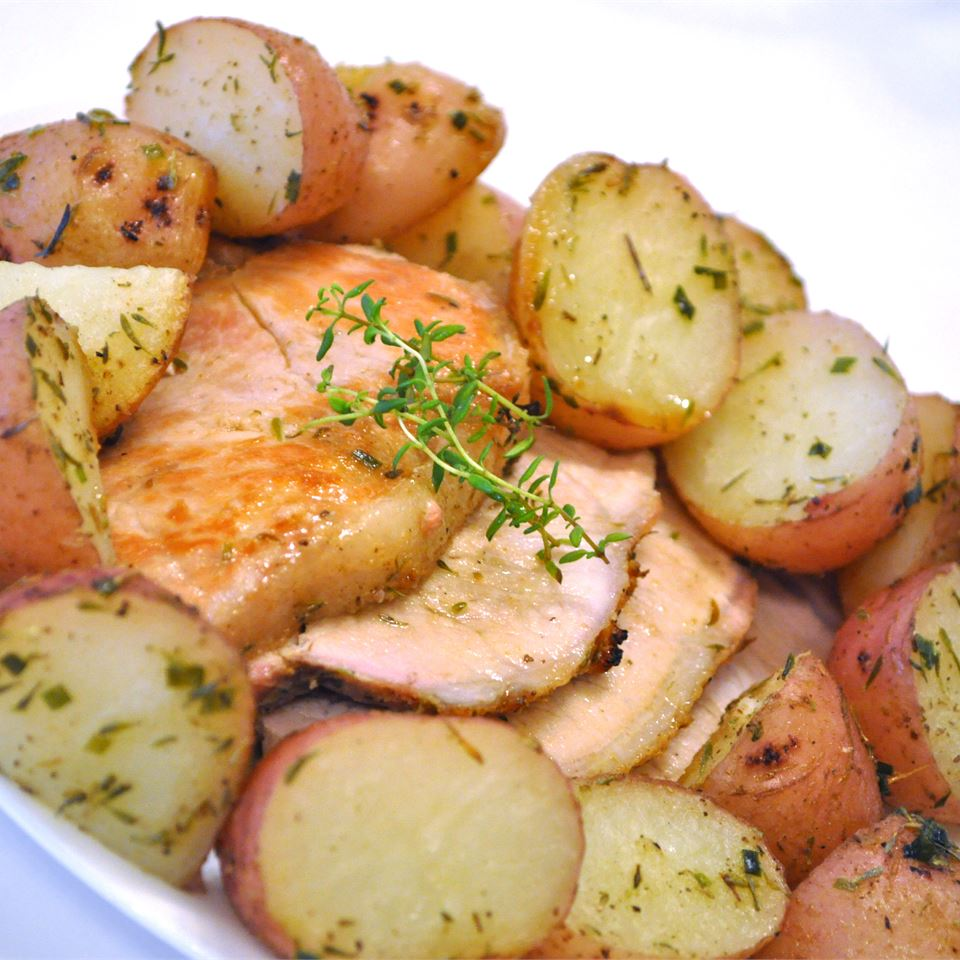

Herb Roasted Pork Loin and Potatoes

Description
This roast pork loin and potatoes is a snap to prepare. Serve with a vegetable side dish and your favorite salad for an extra special meal.
Ingredients
- 6 medium potatoes, peeled and quartered
- 2 tablespoons olive oil
- ½ teaspoon dried thyme
- ½ teaspoon garlic powder
- 1½ teaspoons chopped fresh chives
- salt and pepper to taste
- 1 (4 pound) boneless pork loin roast
- 1 teaspoon dried thyme
- 1 teaspoon garlic powder
- 1 teaspoon onion powder
- salt and pepper to taste
Steps
- Preheat oven to 350 degrees F (175 degrees C).
- In a pot with enough water to cover, boil the potatoes for about 10 minutes. Drain, cool, and place in a bowl. Toss with olive oil, 1/2 teaspoon thyme, 1/2 teaspoon garlic powder, chives, salt, and pepper.
- Rub the pork loin roast with 1 teaspoon thyme, 1 teaspoon garlic powder, and onion powder. Sprinkle with salt and pepper.
- Place the roast on a rack in a shallow roasting pan, and cook 50 minutes in the preheated oven. Arrange the potatoes around the roast, and continue cooking 50 minutes, to an internal temperature of 145 degrees F (63 degrees C). Remove from heat, cover with foil, and let sit 15 minutes before slicing.
Return to main page